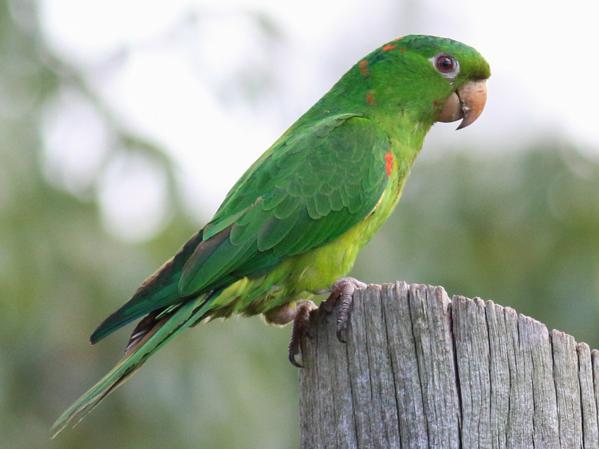

Perico
Los psitácidos (Psittacidae) son una familia de aves psitaciformes llamadas comúnmente loros o papagayos, que incluye a los guacamayos, las cotorras y formas afines de América y África. Se clasifica dentro de la superfamilia Psittacoidea junto a las otras dos familias de loros típicos: Psittrichasiidae y Psittaculidae.
Caracteristicas
Tienen un pico con una forma curvada característica, la mandíbula superior con una movilidad leve que se empalma con el cráneo, y una postura generalmente erguida. Viven por regla general en zonas cálidas y arboladas, son buenas voladoras y diestras escaladoras de ramas y árboles gracias a sus garras prensiles zigodáctilas. Además poseen una gran capacidad craneal, siendo uno de los grupos de aves más inteligentes.
La vida de los loros alcanza, según la especie, de cinco a setenta y cinco años.
El loro más viejo del que se tiene constancia fue Cookie, una cacatúa, fue el poseedor del récord mundial Guinness como el loro más longevo de la historia. Murió en 2016 a la edad de ochenta y tres años y vivió casi toda su vida en el zoológico de Brookfield después de haber sido enviado desde un zoológico australiano aproximadamente al año de edad.
Inteligencia
Muchas bellas especies de psitácidas pueden imitar la voz humana y otros sonidos, a pesar de no poseer cuerdas vocales. La investigadora Irene Pepperberg ha publicado trabajos sobre la capacidad de aprendizaje de un loro gris africano llamado Alex, que fue entrenado para utilizar palabras con el objetivo de identificar objetos, describiéndolos, contándolos, e incluso contestando preguntas complejas, por ejemplo “¿cuántos cuadrados rojos hay?” (con una exactitud del 80 %).
Distribucion
Los psitácidos están distribuidos principalmente por América. Actualmente únicamente en la región neotropical, aunque la extinta cotorra de Carolina vivía en Estados Unidos, donde ocupan muchos y distintos hábitats arbolados, desde las húmedas selvas tropicales hasta las sabanas. Sin embargo, los diez miembros de la subfamilia Psittacinae son nativos del África subsahariana.
Comportamiento
Los loros se caracterizan por ser aves gregarias, esto hace que se establezcan relaciones entre individuos de una población, el agruparse en bandos reporta dos beneficios fundamentales a las poblaciones de loros: pueden realizar una localización más efectiva de los alimentos, y tienen una mayor protección ante el ataque de un depredador. Estas aves han desarrollado toda una gama de comportamientos comprensibles para los componentes del grupo y para el compañero. Rascarse mutuamente la nuca con el pico, es una forma de contacto físico que refuerza el vínculo del grupo y darse de comer ambos, este acto refuerza el vínculo que existe entre macho y hembra y se realiza de forma especial durante la época reproductiva, cuando el macho quiere unirse a la hembra, también los ligeros golpes en el pico que se da la pareja tienen la misma función, al igual que rascarse recíprocamente la nuca o alrededor del pico.
Loros domesticados
Los loros son adquiridos comúnmente como animales domésticos, constituyendo una excelente compañía. Se debe tener en cuenta, con todo, que en muchos países se les captura por su gran valor de venta; eso supone que son capturados de manera ilegal, matando en el proceso a los adultos hasta poner en riesgo de extinción a muchos de ellos. Durante su transporte clandestino en condiciones brutales para no ser detectados mueren el 60% y los restantes son vendidos por traficantes en el extranjero, a donde son llevados también de manera clandestina. En México está prohibido el comercio nacional e internacional de las especies nativas (Ley General de Vida Silvestre 2014 Art 60 Bis 2).